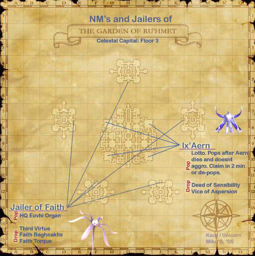

Level 75 reference · Zenith rules
|
Zone |
Level |
Drops |
Steal |
Spawns |
Notes |
|
4 |
L | ||||
|
HP = Detects Low HP; M = Detects Magic; Sc = Follows by Scent; T(S) = True-sight; T(H) = True-hearing JA = Detects job abilities; WS = Detects weaponskills; Z(D) = Asleep in Daytime; Z(N) = Asleep at Nighttime | |||||


Image source
Notes:
- Popped by killing the Aw'aerns in the square rooms in the four corners of the Brand area (Level 2 G-8, I-8, G-10, I-10)
- Pops a few seconds after a placeholder is killed, can be repopped immediately in any of the 4 rooms after death from another Aw'aern. The frequency of which is completely random.
- Depending on where the person with hate when the placeholder was killed is standing, the Ix'aern may or may not aggro him or her.
- Summons 3 Aern's Wynavs to assist it.
- Recommended tactics: pull the Ix'aern out of the way to avoid links, and kite the wynavs with blinkers.
- A single person outside of the party can -ga the wynavs to get hate and then run to the teleporter; they will deaggro and wander back to the middle of the room if nobody else has hate on them.
- The player should be cautioned that the Ix'aern has party style hate (similiar to Darters in Dragon's Aery). This means that anyone in the alliance that shows aggression towards Ix'aern will cause Ix'aern to show aggression towards everyone in the alliance until everyone has died, logged out, or switched areas. This also means it is not wise to reraise until it has been confirmed that Ix'aern is no longer on the offensive or you have been removed from the alliance.
- Either a Deed of Sensibility or a Vice of Aspersion drops 100% of the time, but not both.
Adapted from Eden Wiki: Ix'aern (DRG) · Contributors and history · CC BY-SA 4.0. Revision 20600. Layout, links and optional background text adapted for Zenith.